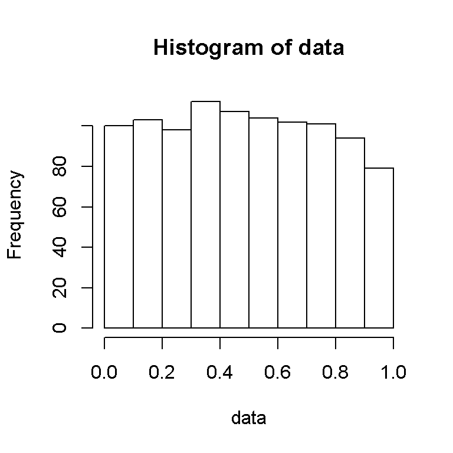
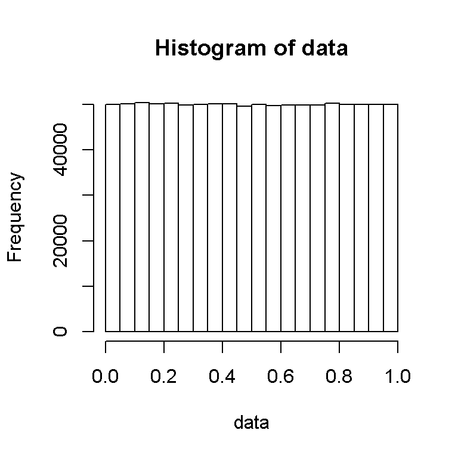

The uniform random variable is one of the most simplest random variables to learn. It may not seem like much but it does contain some nice properties.
A uniform random variable is a random variable which takes on values from parameters \(a\) to \(b\) (inclusive). If the random variable \(X\) is uniform then we denote it as \(X \sim \text{Unif}(a,b)\).
(Note that we deal with the continuous uniform random variable and not the discrete case.)
The continuous probability distribution function (pdf) of a uniform random variable is:
\[ \displaystyle f(x) = \dfrac{1}{b - a} \]
If the parameters \(a\) and \(b\) are 0 and 1 respectively then X is a standard uniform random variable denoted as U. It would be denoted as \(U \sim \text{Unif}(0,1)\). The continuous probability distribution of a standard uniform random variable is just \(f(u) = \dfrac{1}{1 - 0} = 1\).
The image below shows the (theoretical) continuous probability distribution for the uniform random variable.
Source: https://www.probabilitycourse.com/images/chapter4/PDF-Uniform_b.png
The Cumulative Distribution Function (CDF)
The Cumulative Distribution Function or the CDF is the probability that a real-valued random variable \(X\) with a given probability distribution is less than or equal to a quantity \(x\). It is often denoted by \(F(x) = P(X \leq x)\).
The CDF of a uniform random variable \(X \sim \text{Unif}(a,b)\) is
\[F(x) = \dfrac{x - a}{b - a}\]
for \(x \in [a,b)\).
Proof
Start with the definition of the CDF along with the integral representation. Computing the integral will yield the result.
\[\displaystyle F(x) = P(X \leq x) = \int_{a}^{x} \dfrac{1}{b-a} = \dfrac{x - a}{b - a}\]
For the case of a standard uniform random variable, substituting \(b = 1\) and \(a = 0\) yields the CDF as \(F(x) = x\).
Generating a uniform random variable from 0 to 1 (not including 1) is quite simple in Microsoft Excel. The function is =RAND().
To generate or simulate a uniform random variable in the free statistical programming language R, we use the runif function as follows:
\[\displaystyle \text{runif(n, min = 0, max = 1)}\]
The \(n\) in runif is the number of simulations in which the user enters. The minimum of 0 and the maximum of 1 can be altered to create a different uniform random variable.
In these two examples, I am simulating/generating standard uniform random variables from 0 to 1 in the statistical program R.
Case One (Running 1000 simulation trials)
data = runif(1000,min = 0, max =1)
hist(data)
Case Two (Running 1 Million Simulation Trials)
data = runif(10^{6},min = 0, max =1)
hist(data)
Comparing the two images above, increasing the number of trials makes our sample probability distribution become closer to the rectangle shape as in the first image above.
{kind=link}